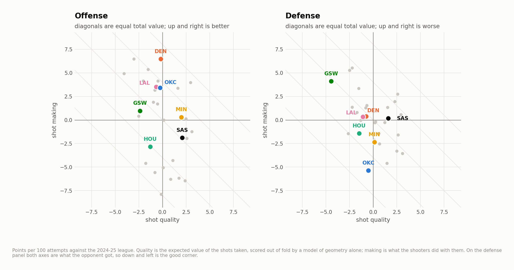
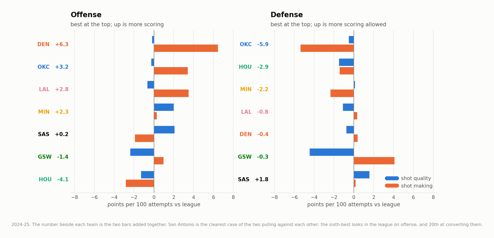
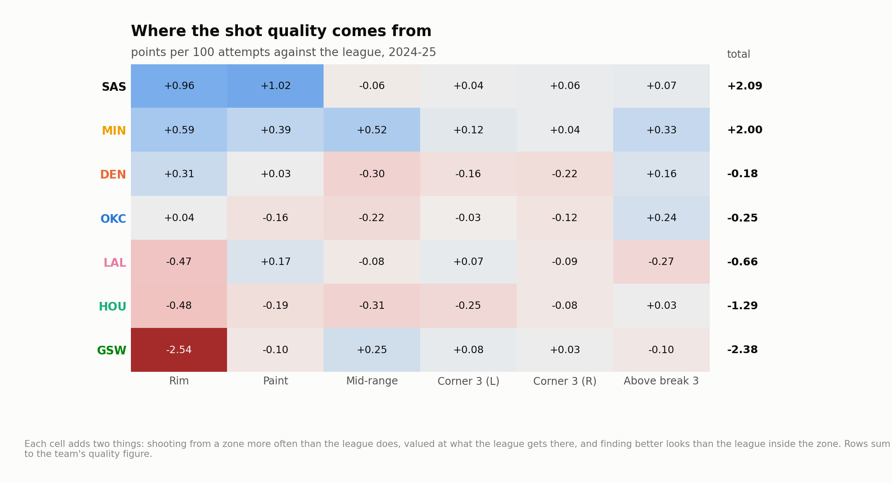
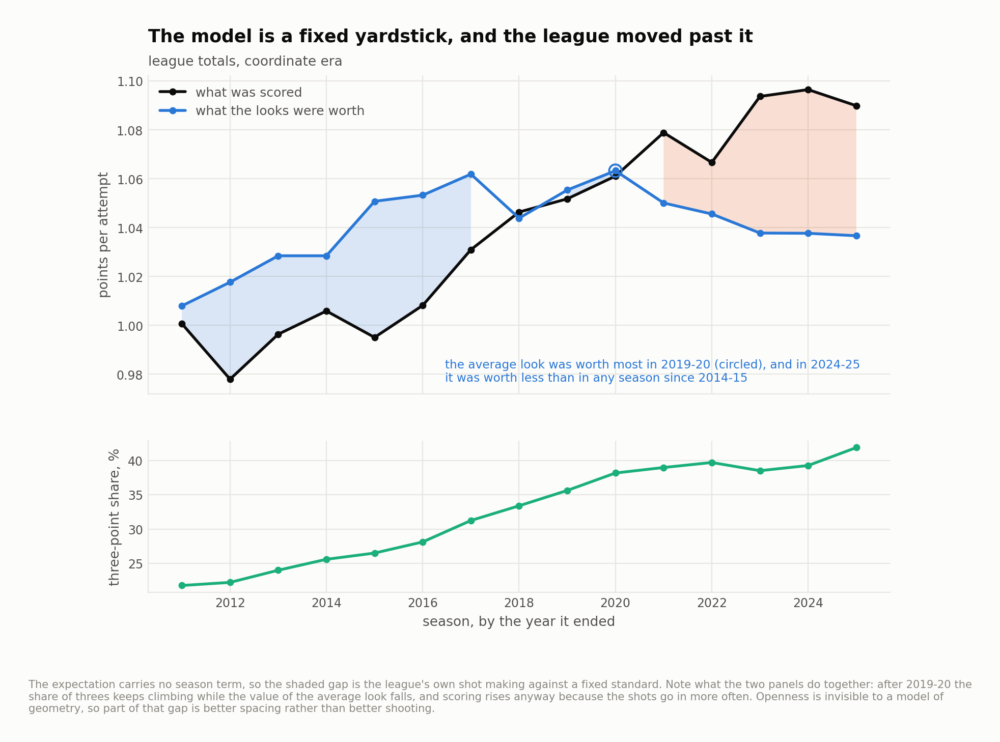

The half of a contender you can scout in a week
San Antonio's road out of the West runs through Oklahoma City and four or five other teams that were all better than them in 2024-25. This takes the last full season the public shot-chart mirror covers and splits each of those offenses and defenses into two numbers: the value of the looks a team generated, and what its shooters did with them.
Fifteen seasons, 3,060,130 attempts, 17,884 games, 450 team-seasons, 2010-11 to 2024-25.
Shot quality is legible after about a week of basketball. Shot making is a real team trait that takes most of a season to see — and a seven-game series is not a season. Over 622 attempts, the resampling band for the league's best shot-making offense overlaps the band for its worst.
The two numbers
Every attempt gets an expected value, xPPS: the points a league-average shooter would be expected to score from that spot, scored by a gradient-boosted model of geometry that never saw the game the shot came from. Aggregate over a team's season and the arithmetic splits cleanly:
quality = team expected - league expected the looks
making = (team actual - team expected) - (league actual - league expected)
total = team actual - league actual = quality + making
All three are points per 100 attempts against that season's league. Nothing is per possession — this file has no free throws, no turnovers and no offensive rebounds, and pretending otherwise would be inventing data.

The first thing the picture says is that the two axes are not the same size. In 2024-25 the standard deviation across the thirty teams was 1.90 on quality and 4.29 on making. Nine of the ten best offenses in the league got there mainly on making. Whatever era of shot-selection arbitrage produced the 2015-20 three-point boom, it is over: teams no longer separate themselves much by where they shoot.
The seven teams

| Offense: quality | making | total | Defense: quality | making | total | |
|---|---|---|---|---|---|---|
| San Antonio | +2.09 (6th) | −1.89 (20th) | +0.19 | +1.58 (24th) | +0.18 | +1.76 (23rd) |
| Oklahoma City | −0.25 | +3.42 | +3.17 (7th) | −0.51 (14th) | −5.37 (1st) | −5.88 (1st) |
| Denver | −0.18 | +6.46 (2nd) | +6.28 (2nd) | −0.76 | +0.39 | −0.37 |
| Minnesota | +2.00 (7th) | +0.29 | +2.30 | +0.12 | −2.35 | −2.23 (5th) |
| LA Lakers | −0.66 | +3.50 | +2.84 | −1.10 | +0.34 | −0.76 |
| Golden State | −2.38 (27th) | +0.97 | −1.41 | −4.46 (1st) | +4.11 (28th) | −0.34 |
| Houston | −1.29 | −2.84 | −4.12 (24th) | −1.49 | −1.43 | −2.92 (4th) |
(Defense is what the opponent got, so on that side negative is good.)
Three of these are worth saying out loud.
San Antonio built the sixth-best set of looks in the league and finished 20th at converting them. Their offense was almost exactly league average overall, and none of that was shot selection.
Oklahoma City's historic defense is 91% conversion. They forced the 14th-best
shot chart in the league and then held opponents 5.37 points per 100 below what
those shots were worth — first by a distance. A coarser five-zone version of the
same split lives in the sibling okc-defence repo and lands in the same place.
Golden State forced the worst looks in the NBA and gave four points of it back. Best shot chart in the league, 28th in conversion allowed, net nothing. That is either the most unlucky defense of the season or a defense whose scheme concedes something the geometry cannot see. The next section is about telling those two apart, and it does not fully manage it.
How long each half takes to see
Take a team-season, split its attempts at random into two disjoint halves, measure both numbers on each half, and correlate across teams. Repeat, and vary how many attempts each half gets.

| Attempts in each half | Quality repeats at | Making repeats at |
|---|---|---|
| 150 (under two games) | 0.56 | 0.13 |
| 622 (a seven-game series) | 0.84 | 0.38 |
| 1,100 (about a quarter of a season) | 0.90 | 0.52 |
| 2,536 (half a season) | 0.96 | 0.71 |
Stepped up to full-season length with Spearman-Brown, a season measures quality at 0.98 and making at 0.83 — so over 82 games, both are real. Making is not noise. It is just slow.
And then the part that surprised me. Correlate a franchise's season against its next one across 418 consecutive pairs, and divide by the within-season reliability to separate how much a team keeps from how well one season measures it:
| Raw year-to-year | Corrected for measurement | |
|---|---|---|
| Offensive quality | 0.63 | 0.64 |
| Offensive making | 0.65 | 0.78 |
| Defensive quality | 0.74 | 0.76 |
| Defensive making | 0.53 | 0.79 |
Once you account for how imprecisely one season measures it, shot making is the more persistent trait on both sides of the ball. Shot selection is a scheme choice and schemes change every summer; shooting talent is roster-sticky, and part of what lands in "making" is a team's ability to manufacture openness the geometry cannot see. Which is a caveat and a finding at the same time, and I have not found a way to separate them with this data.
What seven games does to it
Resample 622 attempts — the league's 88.9 attempts per team-game, times seven — from each team's own 2024-25 season, with replacement, four thousand times. Nothing changes but how much of the team you get to see.

The average band is 4.74 points per 100 wide in standard deviation. The spread of true team making talent across the league, after subtracting the sampling variance, is 4.06. The noise in a single series is larger than the entire distribution of the skill. Twenty-nine of the thirty bands cover zero, and the top band overlaps the bottom one.
So: shrink each team's making by the reliability its sample earns, and see what moves. At season length the reliability is 0.83 and almost nothing moves — a maximum of three places. At series length it is 0.38:
| Biggest risers | Biggest fallers | ||
|---|---|---|---|
| Atlanta | +10 | Phoenix | −10 |
| Chicago | +9 | Indiana | −8 |
| San Antonio | +8 | LA Clippers | −6 |
| Minnesota | +5 | Sacramento | −6 |
San Antonio's offense was 18th on the season and is 10th once making is trusted only as far as 622 attempts allow. That is not a claim that they were unlucky. It is a claim about which of the two numbers a seven-game sample is entitled to move.
Where San Antonio's looks come from

Each cell adds two things: shooting from a zone more than the league does, priced at what the league gets there, and finding better looks than the league inside the zone. Rows sum to the team's quality figure.
San Antonio's entire +2.09 is inside the arc: +0.96 at the rim and +1.02 in the paint off it, with the three-point zones contributing +0.17 between them. Minnesota's +2.00 is spread across every zone on the floor. Golden State's −2.38 is one cell: −2.54 at the rim, the largest single-zone deficit among the seven, and everything else they do is close to league average.
That is a scouting note with a shape. A team whose quality edge is one zone deep is a team an opponent can attack in one adjustment.
Why the model reads geometry and nothing else
The model carries no season term and no action type, and both omissions are deliberate.
No season term, because the whole decomposition depends on the yardstick staying still while the league moves:

The average NBA look was worth most in 2019-20 and by 2024-25 was worth less than in any season since 2014-15 — while the three-point share climbed from 38% to 42% and scoring went up anyway. The league is taking more threes from worse places and making more of them. How much of that is better shooting and how much is better spacing, this data cannot say.
No action type, because the labels moved underneath the sample. Between 2014-15
and 2015-16 the share of attempts logged as a plain "Jump shot" fell seven points
in a single off-season and "Floater" more than doubled; across the fifteen years,
"Layup" went from 12.7% of all attempts to 1.6% and "Pull-up" from 2.4% to 13.0%.
Players did not change that fast. The vocabulary did. output/action_labels.csv
has the whole table.
The model that does read action type is fit anyway, as a sensitivity check.
Across the thirty 2024-25 teams the two agree at r = 0.93 to 0.99 depending on
the component, with a mean gap of 0.35 to 0.50 points per 100 and a worst-case
move of eleven places on offensive quality. Every claim above survives it;
output/spec_sensitivity.csv is the receipt.
Fit quality, out of fold with folds grouped by game, 3.06 million attempts:
| Log loss | Brier | AUC | |
|---|---|---|---|
| Geometry only | 0.6534 | 0.2308 | 0.634 |
| Plus action type, clock, venue | 0.6361 | 0.2235 | 0.665 |
| League make rate, constant | 0.6902 | 0.2485 | 0.500 |
Across twenty equal-count bins the geometry model's predicted and observed make rates differ by at most 0.0024.
What this is not
- Not an offensive rating. Per attempt, never per possession. Free throws, turnovers and offensive rebounds are all outside the file.
- Openness is invisible. No defender data exists in a public shot file, so every point of value a team creates by getting a shooter open is scored as shot making rather than shot quality. This is the reason the making component persists as well as it does, and nothing here separates the spacing from the shooting.
- The series arithmetic is a floor, not a forecast. Resampling a team's own regular-season attempts holds its shot distribution fixed. A playoff opponent changes that distribution deliberately, which adds uncertainty rather than removing it.
- Regular season only, through 2024-25, which is where the mirror ends. The seven-game figure is 622 regular-season attempts, not a playoff series.
- Team abbreviations, not franchises. The year-over-year pairs break at New Jersey's move to Brooklyn and New Orleans' rename, which is why there are 418 pairs and not 420.
Running it
pip install -r requirements.txt
python src/run_01_build.py # 15 season files -> 3.06M model-ready attempts
python src/run_02_model.py # two specifications, scored out of fold (~5 min)
python src/run_03_teams.py # the decomposition, reliability, figures 01-06 (~5 min)
Or make all. make figures re-cuts every chart from the tables already in
output/ without refitting anything.
src/
config.py paths, seasons, the seven teams, the sample floors
features.py raw rows -> geometry, including the coordinate repair
model.py the two specifications and the out-of-fold fit
quality.py the decomposition, split-half reliability, the series resample
figures.py every chart, drawn from the tables and nothing else
style.py one place that decides what a figure looks like
run_0*.py the pipeline, in order
output/ every number quoted above, as CSV
figures/ six figures, regenerated from scratch by the pipeline
docs/method.md the longer argument, including what shot making is really made of
Data
Shot-level data from
DomSamangy/NBA_Shots_04_24, a
mirror of the league's public shot chart endpoint. data/README.md has the fetch
step, the coordinate repair, and the list of things a shot file cannot see.
License
MIT. See LICENSE.